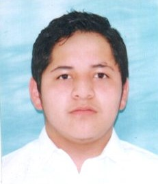

Isaac Ramon
Informacion personal.
Nombre:Isaac David Ramon Tinoco.
Correo Institucional:isaac.ramon@unl.edu.ec
Correo personal:isaacramon39@gmail.com
Educación
Unidad Educativa "Virgilio Abarca Montesinos"
Universidad Nacional de Loja
Un poco sobre mi.
Soy una persona a la cual le entuciasma lo relacionado a la tecnologia, y obviamente, la programacion, este gusto nacio en mi cuando tenia unos 10 años. Con todo lo que he podido aprender hasta ahora mi encanto por esta carrera solo va aumentando por cada ciclo que pasa.